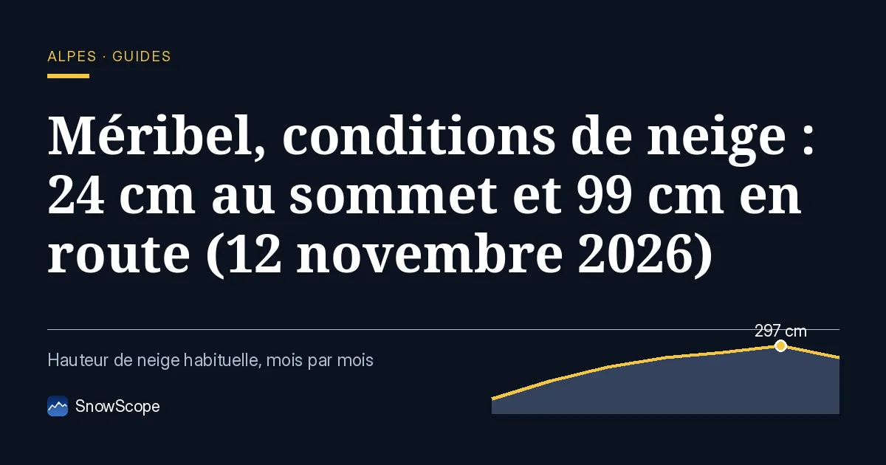

Méribel, conditions de neige : 24 cm au sommet et 99 cm en route (12 novembre 2026)
La première tempête hivernale de Méribel arrive cette semaine. Le relevé du 11 novembre montre le sommet à 2 920 m avec 24 cm, mi-montagne à 2 026 m avec à peine 1 cm, et la base dégagée — mais les prévisions sur sept jours changent tout : 99 cm sont annoncés au sommet, 58 cm à mi-montagne, et même 3 cm en vallée.
Consultez les prévisions neige en temps réel pour Méribel sur l'application SnowScopeHauteurs de neige, alertes poudreuse et carte 3D, gratuitement.

Ce qu'il y a sur la montagne en ce moment
Les hautes crêtes autour de Saulire et du Mont Vallon affichent 24 cm, résultat des 18 cm tombés la semaine passée. Ces pentes relient Méribel à Courchevel et Val Thorens. Le terrain de mi-montagne, qui alimente la plupart des descentes vers Mottaret, n'a que 1 cm d'épaisseur, bien que 7 cm se soient accumulés au cours des sept derniers jours. La station de vallée est à zéro.
En début de saison, les chiffres sont si faibles que le soleil et le sol dénudé consomment encore l'eau de la neige fraîche. Un cirque orienté nord conservera plus de neige qu'une piste ensoleillée, et les rochers peuvent percer la couche mince. Ces chiffres sont des estimations pour la zone cartographiée ; les épaisseurs exactes varient selon l'exposition et l'orientation des pentes.

Dans sept jours : un apport majeur
Entre maintenant et le 18 novembre, les prévisions ajoutent 99 cm au sommet et 58 cm à mi-montagne. Les 24 premières heures à elles seules amènent 18 cm au sommet. Si cela tombe comme prévu, mi-montagne se transforme de 1 cm à une base exploitable en une semaine, et le sommet dépassera ce qu'un novembre typique accumule habituellement à mi-mois.
Les prévisions importantes comportent de l'incertitude. Les 48 premières heures sont les plus fiables ; au-delà, la direction du vent et l'exposition locale deviennent aussi importantes que le total. Les vents forts sur les crêtes déliteront et déposeront la neige de façon inégale.
Comment cette semaine se compare aux novembres précédents
Sur 46 hivers (1980–81 à 2025–26), les premières neiges atteignent le sommet de Méribel le 26 septembre, mi-montagne le 11 octobre, et la vallée le 3 novembre. Un novembre typique accumule 4 cm au village, 19 cm à mi-montagne et 62 cm au sommet. Décembre construit jusqu'à 20, 55 et 139 cm respectivement.
L'hiver dernier (2025–26) a atteint 67 cm en vallée, 174 cm à mi-montagne et 312 cm au sommet. La médiane sur les 46 hivers atteint 54, 159 et 343 cm. Si les prévisions de cette semaine se réalisent, Méribel passera d'une position bien en retard sur la courbe saisonnière à une avance en sept jours.
Quelles altitudes comptent le plus maintenant
Pour les skieurs prévoyant un séjour en décembre, la stabilité à mi-montagne compte le plus. L'épaisseur habituelle de décembre là-bas est 55 cm, et 23 des 46 derniers hivers ont atteint 50 cm ou plus à cette période — une majorité solide. Le terrain cartographié s'étend sur 142 km de pistes avec 46 remontées entre 1 132 m et 2 920 m.
Les mois les plus profonds au sommet sont mars et avril (267 et 297 cm respectivement), mais décembre à mi-montagne offre assez de neige pour la plupart des pistes interconnectées. Observez comment la tempête de la semaine prochaine se distribue selon les altitudes et les expositions avant de fixer une réservation en milieu de saison.
Timing et ce qu'il faut observer
Les 24 premières heures (18 cm au sommet) constituent la partie la plus fiable de la prévision. Au-delà, la semaine devient plus incertaine ; les trajectoires des tempêtes et les régimes de vent comptent autant que les totaux bruts. L'air plus chaud en altitude pourrait réduire les totaux ou apporter de la pluie à l'altitude de mi-montagne.
La station annoncera sa date d'ouverture et l'état des pistes une fois la tempête calmée. Une base de 1 cm, même après l'ajout de neige, n'est pas skiable : il faut d'abord une neige de fondation et du temps de damage.
Conseils aux skieurs
- Les 24 premières heures apportent 18 cm au sommet — la partie la plus sûre de la prévision. Attendez l'annonce d'ouverture de la station avant de vous déplacer.
- La neige à mi-montagne sur une base fine de début de saison se compactera et se tassera rapidement. L'épaisseur de neige fraîche indiquée ici ne correspondra peut-être pas à une épaisseur skiable pendant plusieurs jours.
- Les vents forts déplaceront la neige sur les crêtes vers les combes et les gullies : le terrain orienté nord sera plus profond que les pistes orientées sud selon l'épaisseur complète prévue.
- Tout projet hors-piste pendant ou après une semaine de tempête nécessite le bulletin actuel d'estimation du risque d'avalanche de Météo-France.
- Décembre atteint habituellement 55 cm à mi-montagne ; si la tempête de cette semaine se réalise, elle constitue une base solide pour la saison à construire au fil de l'hiver.
À propos de ces chiffres
Les hauteurs de neige des stations sont la neige la plus épaisse sur le haut du domaine à la date indiquée ; ce sont des estimations pour une zone, pas une mesure en un point. Les prévisions peuvent changer. Consultez toujours le bulletin d'avalanche officiel avant le hors-piste.
Bulletins d'avalanche officiels: Météo-France – Bulletin d'estimation du risque d'avalanche
Citer ce bulletin
Pour la recherche, l'enseignement ou la presse : chiffres et graphiques réutilisables librement sous CC BY 4.0 avec cette citation.
SnowScope (2026), Méribel, conditions de neige : 24 cm au sommet et 99 cm en route (12 novembre 2026), https://snowscope.app/blog/fr/2026/11/meribel-snow-conditions-12-november-2026.html, consulté le 2026-11-12
SnowScope (Atlas Labs). (2026, November 12). Méribel, conditions de neige : 24 cm au sommet et 99 cm en route (12 novembre 2026). SnowScope snow reports. https://snowscope.app/blog/fr/2026/11/meribel-snow-conditions-12-november-2026.html
BibTeX
@misc{snowscope2026meribelsnowconditions12n,
author = {{SnowScope (Atlas Labs)}},
title = {Méribel, conditions de neige : 24 cm au sommet et 99 cm en route (12 novembre 2026)},
year = {2026},
month = nov,
howpublished = {\url{https://snowscope.app/blog/fr/2026/11/meribel-snow-conditions-12-november-2026.html}},
note = {Published 2026-11-12 09:23 UTC; accessed 2026-11-12}
}· CC BY 4.0 · Méthodes, données et outils →
Méribel : neige et température selon l'altitude, cet hiver vs l'hiver dernier (outils) →
Suivre Méribel
Gratuit : un message quand la neige arrive, et la météo chaque matin.